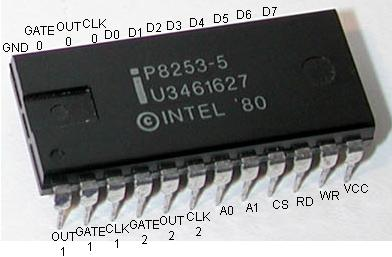

8253 Programmable Interval Timer
8253 PIT Microcontroller with all pins labled: 
Note
This tutorial may require some knowledge of hardware interrupt handling and the 8259 Programmable Interrupt Controller (PIC). Please see [this tutorial] (fix link) for information on them.
This tutorial will cover everything you ever wanted to know about system timing and programming the Intel 8253 Programmable Interval Timer (PIT).
The 8253 PIT has had a long history, and has played an important part in nearly every x86 PC. It is the "System clock", and is responsible for many very important functions within the PC. This erm.. "chip" is no longer distributed as an independent chip (as a Dual Inline Package (DIP) to be more precise), but rather integrated into the motherboards southbridge chipset.
Everything about the 8253 still remains, however. Because of this, its input and output facilities, hardware, and the way we program the 8253 remains the same. Because there is not of any difference (besides speed) between this and the older DIPs, we will be looking at the older 8253 DIP to help keeping things simple.
The picture at the beginning of this tutorial displays what we will be looking at and programming.
Lets have some fun 😉
Programmable Interval Timers
A Programmable Interval Timer (PIT) is a counter which triggers an interrupts when they reach their programmed count. The 8253 and 8254 microcontrollers are PITs avialble for the i86 architectures used as timer for i86-compatable systems.
These PICs include three timers that are used for different putposes. The first timer is useually used as the System Clock. Timer 2 was used for RAM refreshing, and timer 3 is connected to the PC speaker. We will see all of the connections a little later, so we won't go into much detail now.
Instead, lets take a closer look at one of these famous PITs... The 8253 Microcontroller.
8253 Hardware
Before looking at the software side of things, it will be helpful to learn more about what we are actually programming. Because of this, we will look at the 8253 hardware first, and learn how it works and is connected to the rest of the PC. We will also be looking at internal registers, pin layout, command words, and more that will be needed for the software side of things.
8253 Hardware: Description
The 8253 PIT has a simple interface, and is not that hard to program.

Yep--There is the chip that we will program.
Here is the complete pin layout. We will be refrencing these pins throughout this tutorial, so it is important to know what they are.
- D0...D7: 8 bit data lines. This is connected to the data bus so we can read and send commands.
- CLK 0, CLK 1, CLK 2: Clock input pins. There are 3 pins for 3 separate counters
- OUT 0, OUT 1, OUT 2: Output data line. There are 3 pins for 3 separate counters
- **GATE 0, GATE 1, GATE 2:**Gate data line. There are 3 pins for 3 separate counters
- GND: Ground
- Vcc: Input voltage
- WR: Write enable. When this line is active, lets the 8253 that we are writing data
- RD: Read enable. When this line is active, lets the 8253 that we are reading data
- CS: Chip select signal
- A0, A1: Address lines. Used to determin what register we are accessing.
Not to bad. There are a couple of important pins here that we need to look at.
The D0-D7 pins connect to the systems data bus. These pins carry our data when we are sending or reading data to the controller.
Vcc and GND complete the circuit (Voltage input, Ground output.)
The WR pin tells the controller that we are writing (expect input on the data pins.) When the signal in this pin is "low", we are currently sending data. The RD pin is very simular in this manner, but it tells the controller we are reading data instead. The CS pin is a special pin that determins what the controller should do with the RD and WR pins. If the CS pin is "low", the controller will respond to the RD and WR pins. If CS is not, they are ignored. WR and RD connect to the Systems Control Bus. The CS pin connects to the systems Address Bus for port i/o operations.
The A0 and A1 pins are connected to the Systems Address Bus, and are used to determin what register we are accessing. These, in conjunction with WR and RD allows the controller to determin if are reading to or from a register.
Notice that there are three groups of the CLK, OUT, and GATE pins. Yes, there is indeed a reason for this: The 8253/8254 microcontrollers contain 3 independent timers.
Lets look closer on how this works...
8253 Hardware: Counters
The 8253 consists of three counters: Counter 0, Counter 1, and Counter 2. Each counter has 2 input pins: CLK (Clock Input) and GATE, and one pin for output--OUT.
As there are three counters, they are used for different purposes within the system. Each counter are 16 bit down counters.
Typical computers connect the first timer's OUT pin to a Programmable Interrupt Controller (PIC) to generate an interrupt for every clock tick. This is useually used as the System Timer. The second counter was used for generating a timing signal to the Memory Controller to refresh DRAM memory. The third counter is used to generate tones to the PC speaker.
As you can probably guess, the PIT uses the OUT pins to signal these devices when its counter reaches 0. When the PIT's counter reaches 0, it simply wraps around and starts again.
CLK is the clock input for the timer. It may be used with the GATE pin depending on the current mode of operation. The following table describes the operation depending on if the current in GATE is low, rising, or high.
GATE Input pin operations Table
| Mode | Low or going low | Rising | High |
|---|---|---|---|
| 0 | Disables Counting | - | Enables Counting |
| 1 | - | Initiates Counting and resets OUT after next CLK | - |
| 2 | Disables Counting, Sets OUT to high | Reloads counter and initiates counting | Enables Counting |
| 3 | Disables Counting, Sets OUT to high | Initiates Counting | Enables Counting |
| 4 | Disables Counting | - | Enables Counting |
| 5 | - | Initiates Counting | - |
The 8253 Counters are also known as Channels. Knowing that the 8253/8254 PITs contain three channels, lets look at each of them more closer...
Channel 0
Channel 0 is connected to the 8259 PIC to generate an Interrupt Request (IRQ). The PITs OUT pin connects to the PIC's IR0 pin. Typically the BIOS configures this channel with a count of 65536, which gives an output frequency of 18.2065 Hz. This fires IRQ 0 every 54.9254 ms.
The is the primary timer used on almost all x86 machines. the clock rate (Signalled through Counter 0's CLK pin) is at 1193181.6666... Hz, one third of the NTSC subcarrier frequency. This was required do to backward compatability with the older CGA PC's.
Channel 0 is typically programmed in most systems to act as the System Clock. This is made possible do to channel 0's OUT pin indirectly connecting to the PIC's IR0 line. Depending on the mode that we set it in, we can set the timer to a good frequency, and have it enable the PIC's IR0 line at a constant rate. Afterwords, reseting itself and starting over again. Because the PIC is used to handle hardware interrupts, we will need to first reprogram the PIC.
Because it is connected to the interrupt with the lowest number (IR0), it also has the highest priority over all other hardware interrupts.
Its lowest frequency rate is normally used for computers running the old DOS systems (Are there any left?) at about 18.2 Hz. Its highest frequency rate is a little over a megahertz.
In real mode operating systems, the BIOS normally increments the number of times IRQ0 is fired to 0000:046C, which can be read by any running program.
Channel 1
Many video cards and the BIOS may reprogram the second channel for their own uses. This channel was originally used for generating a timing pulse signal to signal the memory controller to refresh the DRAM memory. In modern times, this is no longer needed as the refresh is done by the memory controller. Because of this, there is no guarantee at what devices may use this counter.
Channel 2
This channel is connected to the PC Speaker to generate sounds. the PC speaker is normally meant to produce a square wave with two levels of output. However, it is possible to go between the two true defined sound square levels. This is called Pulse-Width Modulation (PWM).
We can set up this channel by programming it for mode 3, and setting a frequency rate for the tone.
We can also program the PC Speaker directly. Looking back at [Tutorial 7] (fix link OSDev7.html), we can see that the PC speaker is mapped to port 0x61. This port defines how the speaker will operate:
- Bit 0: If set (1), the state of the speaker follows bit 1
- Bit 1: If set (1), the speaker uses the PIT, If not set (0), the speaker disables its connection to the PIT
If bit 0 is set, the rest of the byte contains a pattern of bits representing the frequency of the tone. We can generate up to 8 bit sounds from the speaker, which is kind of cool, but tricky to do.
You should also notice that we can disable devices from using the PIT. At startup, the BIOS configures the speaker to use the PIT channel 2, running in mode 3. It is recommended to keep the speaker to use the PIT do to timing problems that you will run into.
Here is an example:
; disables the speaker, and stop using channel 2
mov dx, 0x61
out dx, 0
; generates tone from speaker
out dx, 11111101b
Conclusion (counters)
Once a counter is set up, it will remain that way until it is changed by another control word.
There is some cool things we can do with these counters, huh? Because channel 1 is not used anymore, we cannot assume it is safe and use it ourselves. Because of this, it is recommended to stick to channel's 0 and 2.
We can use channel 0 to fire off our interrupt handler. Our interrupt handler can increment a counter used by our kernel. This special little counter variable, plays a very important role in the system: The System Timer. We will see all of this soon, don't worry ;)
Alright...So, we looked at pin configurations, and the three timers used by different devices for..err...timing. Whats next?
When programming these timers, we have to initialize them. Remember that each channel supports 6 different modes. Some of these modes are very useful. Other modes are not. Lets take a look at each of these modes for better understanding of them. Please note that this gets a little detailed, but I am sure you already knew or were expecting that 😁
8253 Channel Modes
Remember that each counter can be programmed in 1 of 6 modes. This is done by sending an Initialization Control Word (ICW) to the controller. We will look at the format of this command word later. For now, lets look at each mode.
Mode 0: Interrupt on Terminal Count
In this mode, the counter will be programmed to an initil COUNT value and afterwords counts down at a rate to the input clock frequency (The CLK signal). When COUNT is equal to 0, and after the Control Word is written, the counter enables its OUT pin (by setting its line high) to signal the device it is connected to. Counting starts one clock cycle after the COUNT is programmed. The OUT line remains high until the counter is reloaded with a new value or the same value or until another control word is written to the controller.
What this mode basically does is allow us to set a timer that counts down to 0. After which, we will need to reload a new count number to it, or a new control word to re-initialize the counter.
Mode 1: Hardware Triggered One-Shot
In this mode, the counter is programmed to give an output pulse every certain number of clock pusles. The OUT line is set to high as soon as a Control Word is written. After COUNT is written, the counter waits until the rising edge of the GATE input. If the trigger occurs during the pulse output, the 8253 will be retriggered again. One clock cycle after the rising edge of GATE is detected, OUT will become and remain low until COUNT reaches 0. OUT will then be set high until the next trigger and wait again until the rising edge of the GATE input is detected.
Mode 2: Rate Generator
This mode configures the counter to be a "divide by n" counter, which is commonly used to generate a real-time system clock.
The counter is programmed to an initial COUNT value. Counting starts at the next clock cycle. OUT remains high until COUNT reaches 1. Afterwords, OUT will be set low for one clock pulse. OUT is then set back high, and COUNT is reset back to its initial value. This process repeats until a new control word is sent to the controller.
The time between the high pulses depends on the current value in COUNT, and is calculated using the following formula:
COUNT = input (Hz) / Frequency of output
COUNT never reaches 0. It only ranges from n to 1, where n is the initial COUNT value.
Okay, lets stop for a moment. Remember that Counter 0 is connected to the PIC? Counter 0's OUT line indirectly connects to the PIC's IR0 line. Knowing that, when the IR0 line is low, the PIC will call the IRQ 0 handler defined by us.
If we set the counter to Mode 2, we can set up the timer to fire off our interrupt at a constant rate. All we need to do is determine what the COUNT value should be based off of the above formula. This is used very often in setting up the System Timer for the operating system. After all, IRQ 0 is now being called for every clock tick at a frequency rate that we defined.
Yes, Mode 2 is an important mode, indeed.
Mode 3: Square Wave Generator
This mode is quite similar to Mode 2. However, OUT will be high for half of the period, and low for the other half. If COUNT is odd, OUT will be high for (n+1)/2 counts. If COUNT is even, OUT will be low for (n-1)/2 counts.
Everything else is the same from Mode 2. We will need to use the formula from Mode 2 to set up the initial COUNT value.
If the speaker is configured to use the PIT, the channel that it uses typically should be set to use this mode.
Mode 4: Software Triggered Strobe
The counter is programmed to an initial COUNT value. Counting starts at the next clock cycle. OUT remains high until COUNT reaches 0. The counter will then set OUT low for one clock cycle. Afterwords, it resets OUT to high again.
Mode 5: Hardware Triggered Strobe
The counter is programmed to an initial COUNT value. OUT remains high until the controller detects the rising edge of the GATE input. When this happens, the counting starts. When COUNT reaches 0, OUT goes low for one clock cycle. Afterwords, OUT is set high again. This cycle repeats when the controller detects the next rising edge of GATE.
8253 Registers
The 8253 contains a few registers that we can access. Most of these registers are very simular to each other, so I will just put them in the same table for clarity. This table displays each register and their functionality when the corresponding lines on the 8253 are active. Notice how the RD and WR lines determine the read and write operation. Also notice how the A0 and A1 lines determin what register we are accessing.
Looking at the port table from [Tutorial 7] (Fix link), we can see that the System Timer is mapped by the BIOS to use ports 0x40-0x4F. Each port address is a byte in size.
8253 PIT Internal Registers Table
| Register Name | Port Address | RD line | WR line | A0 line | A1 line | Function |
|---|---|---|---|---|---|---|
| Counter 0 | 0x40 | 1 | 0 | 0 | 0 | Load Counter 0 |
| Counter 0 | 0x40 | 0 | 1 | 0 | 0 | Reads Counter 0 |
| Counter 1 | 0x41 | 1 | 0 | 0 | 1 | Load Counter 1 |
| Counter 1 | 0x41 | 0 | 1 | 0 | 1 | Reads Counter 1 |
| Counter 2 | 0x42 | 1 | 0 | 1 | 0 | Load Counter 2 |
| Counter 2 | 0x42 | 0 | 1 | 1 | 0 | Reads Counter 2 |
| Control Word | 0x43 | 1 | 0 | 1 | 1 | Write Control Word |
| NA | 0 | 1 | 1 | 1 | No Operation |
All other port addresses from 0x44-0x4f are undefined.
The system will activate the correct lines depending on the operation we are performing. When setting the counter registers, we need to first let the controller know how we are going to load it. This is done by first setting up the control word. Lets take a look closer at these registers...
Counter Registers
Each counter register holds the COUNT value used by the PIT to count down from. They are all 16-bit registers. When writing or reading from these registers, you must first send a control word to the PIT. You might wonder why we cannot just do it directly. There is a reason for this, and it has to do with the size of the data. The PIT only has 8 data lines (Pins D0-D7). However, the counter registers are all 16 bits, not 8.
Because of this, how does the PIT know what data you are writing to its counter register? How does it know what byte within the counter registers 16 bits are you setting? It doesn't. Sending a command word allows you to let the PIT know to expect incoming data, and what to do with it. We will look at that next.
Control Word Register
THIS will be important to us.
This is an important register used to determin and set the operation modes for the controller. This is accessed by enabling the RD, A0, and A1 lines. This register can only be written to, not read from.
The control word register uses a simple format. At first I was thinking of using a table here, but it may be easier in a list format so here it is:
- Bit 0: (BCP) Binary Counter
- 0: Binary
- 1: Binary Coded Decimal (BCD)
- Bit 1-3: (M0, M1, M2) Operating Mode. See above sections for a description of each.
- 000: Mode 0: Interrupt or Terminal Count
- 001: Mode 1: Programmable one-shot
- 010: Mode 2: Rate Generator
- 011: Mode 3: Square Wave Generator
- 100: Mode 4: Software Triggered Strobe
- 101: Mode 5: Hardware Triggered Strobe
- 110: Undefined; Don't use
- 111: Undefined; Don't use
- Bits 4-5: (RL0, RL1) Read/Load Mode. We are going to read or send data to a counter register
- 00: Counter value is latched into an internal control register at the time of the I/O write operation.
- 01: Read or Load Least Significant Byte (LSB) only
- 10: Read or Load Most Significant Byte (MSB) only
- 11: Read or Load LSB first then MSB
- Bits 6-7: (SC0-SC1) Select Counter. See above sections for a description of each.
- 00: Counter 0
- 01: Counter 1
- 10: Counter 2
- 11: Illegal value
Alright, then! bit of stuff going on here, don't you think? So...All we need to do is build up the control word by writing to the control word register to initialize the controller, right? Of course! Sort of...
Basically, we want to initialize a counter for a specific purpose. So, we have to build up the control word to set up the counter, the counters counting mode and operating mode. THEN, we initialize the counter itself. Remember that, once initialized, the counter can carry on itself (depending on its mode), so we only need to do this once.
Lets give an example and put everything together, shall we?
Lets pretend we already have a PIC initialized and interrupt 0 handler. We want to set up a timer to fire off IRQ 0 every 100Hz (once every 10 milliseconds). We know that channel 0 of the PIT is connected to the PIC's IR0 line, so we can program channel 0 to do this.
; COUNT = input hz / frequency
mov dx, 1193180 / 100 ; 100hz, or 10 milliseconds
; FIRST send the command word to the PIT. Sets binary counting,
; Mode 3, Read or Load LSB first then MSB, Channel 0
mov al, 110110b
out 0x43, al
; Now we can write to channel 0. Because we set the "Load LSB first then MSB" bit, that is
; the way we send it
mov ax, dx
out 0x40, al ;LSB
xchg ah, al
out 0x40, al ;MSB
Notice how we set up the control word first, THEN write to the counter 0 register.
Is that it!?? Yep. The above will program counter 0 to fire IRQ0 every 10 milliseconds.
Conclusion
The 8253 and 8254 PIT's are very usefull little chips. They can be used in alot of different devices, and used for alot of different purposes.
For our needs, we can both have a nice signaled output via the PC speaker and a system timer that is a very important aspect on all modern system software. We have even looked at another way of working with the speaker directly, and even disable its connection to the PIT, which has advantages and disadvantags. It is up to the system software designer to decide and outweight the pros and cons of the different and unlimited possibilities when developing their system.
We have looked at the PIT in depth, pin configuations, and their connections on a standard x86-based PC motherboard. The PIT itself is useually integrated with the motherboard's southbridge in modern computers.
Tutorial 16: Kernel: Timing and Exception Handling puts everything from the [8259A PIC] (OSDevPic.html fix link) and this tutorial together. It impliments and creates interfaces for both devices. Mabey even a little bit more...